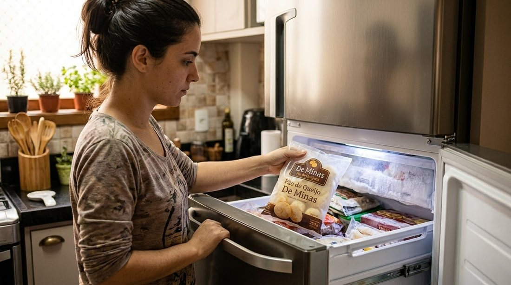
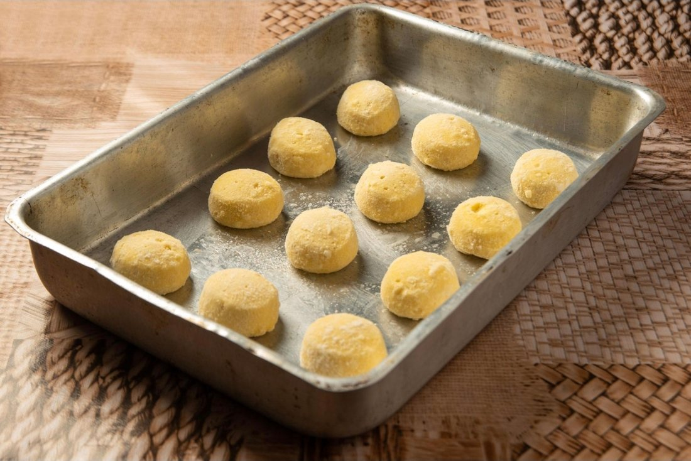
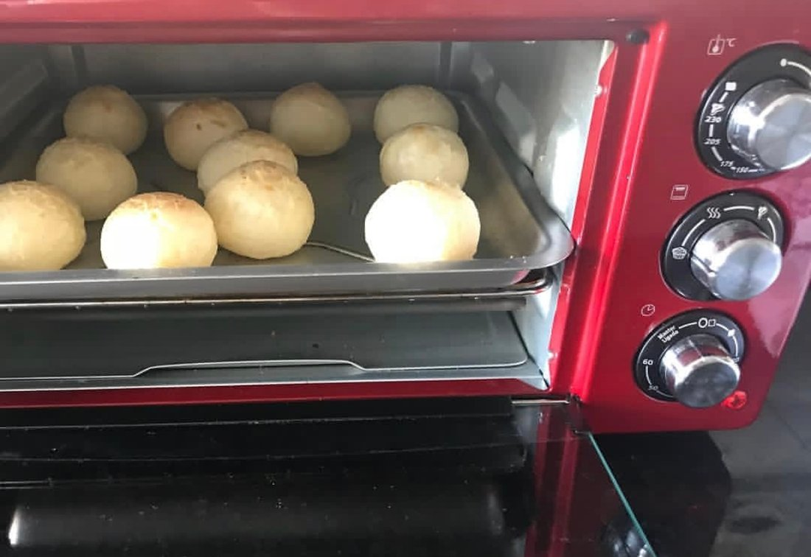
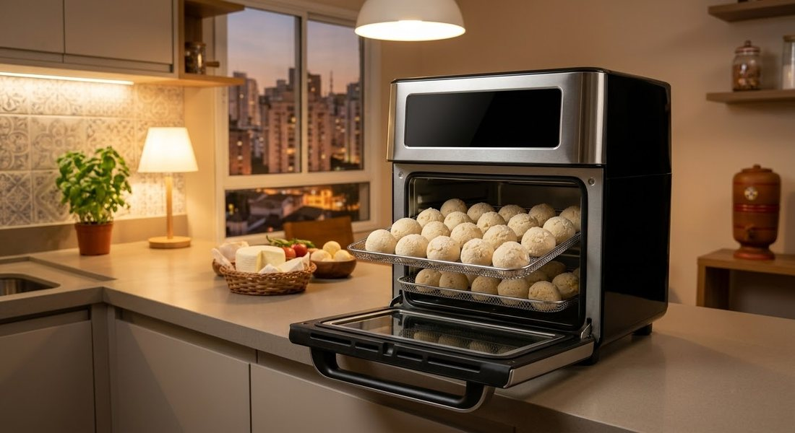

Modo de assar
Como assar
Do freezer ao forno em quatro passos, sem descongelar. E com as dicas do Pingo.
Modo de assar
Do freezer ao forno em quatro passos
Não precisa descongelar. Siga o passo a passo e acompanhe nos primeiros minutos: cada forno tem o seu jeito.
- 1
Pré-aqueça o forno
180°por 5 minutos
- 2

Tire do freezer
Retire o pão de queijo do freezer ou congelador. Não precisa descongelar.
- 3

Coloque em uma forma
Distribua os pães de queijo na forma, com um espacinho entre eles para crescer.
- 4

Leve ao forno
De 25 a 30 minutos, ou até dobrar de tamanho e dourar.

Outra opção
Airfryer
Confira o tempo na embalagem e acompanhe nos primeiros minutos.
Dicas do Pingo
Os tempos variam conforme o tamanho do pão de queijo e o seu forno. Confira também a embalagem do produto.
Conheça cada um
Cada pão de queijo tem o seu jeito
Toque no tipo para ver como é, como assar e uma dica de quem entende de pão de queijo.
TradicionalO de toda hora.
Pão de queijo mineiro de todo dia: casquinha douradinha e crocante por fora, miolo macio por dentro e muito queijo. Vai bem no café da manhã, no lanche e em qualquer visita que chega sem avisar.
Sabores especiaisChipa, três queijos e biscoitos de queijo.
Primos do pão de queijo para variar a mesa sem fugir da tradição: chipa, versões com mais de um queijo e biscoitos de queijo.
Recheados artesanaisRomeu e Julieta e outros casamentos.
Pão de queijo com recheio cremoso. O clássico é o Romeu e Julieta, a união mineira do queijo com a goiabada, mas tem também doce de leite e outros sabores.
Recheados empanadosCasquinha crocante, recheio generoso.
Pão de queijo recheado e empanado, com casquinha crocante por fora e recheio por dentro. Bom para lanche e para fazer a refeição render.
Broas de milhoQuitanda mineira do jeito de lá.
Broa de milho para quem gosta de quitanda de verdade, daquelas de mesa de café de roça.
CombosMesa farta para a família e para a festa.
Combinações de pão de queijo para a casa cheia: café da tarde, família, recheados e festa.
Gostou?
Agora é só escolher o seu
Monte o pedido no catálogo e receba em casa, quentinho para assar.